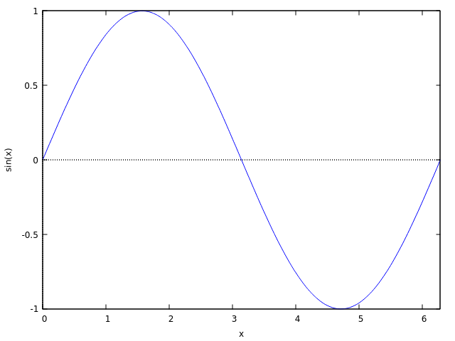
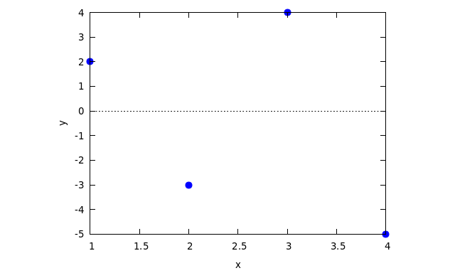

aez-notes
Table of Contents
Emacs interface to Maxima
Add the following to your configuration.
(add-to-list 'load-path "<path/to/emacs/maxima/") (autoload 'maxima-mode "maxima" "Maxima mode" t) (autoload 'imaxima "imaxima" "Frontend for maxima with Image support" t) (autoload 'maxima "maxima" "Maxima interaction" t) (autoload 'imath-mode "imath" "Imath mode for math formula input" t) (setq imaxima-use-maxima-mode-flag t) (add-to-list 'auto-mode-alist '("\\.ma[cx]" . maxima-mode))
Start a Maxima session with M-x imaxima. To send a buffer to the REPL use C-c
C-b. To send a region C-c C-r or just a single line C-c C-c. To get the
potential completions for a variable name M-TAB.
Spacemacs
There is a spacemacs layer for maxima and I have a fork too. The instructions above are not necessary if you are using this layer with spacemacs.
REPL display configuration
The output of Maxima can be displayed in three ways: single line of ascii,
multiple lines of ascii or rendered with imaxima. The output type is
determined by the value of the display2d variable (in Maxima) which can be
false, true, or imaxima.
display2d: true;
If you want to change the font size for the latex output, modify the
(customisable) variable imaxima-fnt-size.
If you want to change the number of significant figures to which floating point
numbers are displayed there is the variable fpprintprec (floating point print
precision?). The default value is 0, for larger integers it is that number of
digits.
Plotting
Maxima uses Gnuplot for plotting; n.b. the use of $ to show the plot!
plot2d(sin(x), [x,0,2%pi])$

There is an example of how to save a figure in Problem 5.
plot2d([discrete, [1,2,3,4], [2,-3,4,-5]], [style, points])$

Programming in Maxima
Expressions
- "Most things in Maxima are expressions."
- A comma expression is a sequence of expressions which evaluates to the value
of the last one. The syntax is
(<exp_1>, <exp_2>, ..., <exp_n>). - "By default, function names are verbs." I do not understand the significance of nouns and verbs in Maxima.
- There is an automatic simplifier, but you can guide it with functions such as
tellsimp.
Org-mode as a notebook environment
This tutorial shows how you can set up org-mode to work as a Maxima notebook.
Getting help
There is a the example function which can be used to get examples of the usage
of a function. There is the ? <function>; to get the documentation for a
function.
Removing existing definitions
restart(); kill(all);
Assignment
y : 10; f(x) := x + 1;
Program flow
if cond_1 then expr_1 elseif cond_2 then expr_2 else expr_3;
There are several ways to express for loops.
for variable: initial_value step increment thru limit do body for variable: initial_value step increment while condition do body for variable: initial_value step increment unless condition do body for variable in list do body
Lists
| Function | Use |
|---|---|
makelist |
Map and sequence style list creation |
some and every |
Fold predicate over list |
cons |
cons |
first |
First element of a list |
rest |
Works as head or tail |
append |
Concatenation (not join) |
map |
Map function over list; also see makelist |
apply |
Uncurried application |
Evaluation
To force the evaluation of an expression before binding it to the value of a
function use the define function.
define(fdash(x), diff(f(x), x));
Simplification
restart(); kill(all); matchdeclare([xx,yy,aa],true)$ tellsimpafter(xx^a*yy^a,(xx*yy)^a)$ tellsimpafter(xx^a/yy^a,(xx/yy)^a)$ x^a*y^a; x^a/y^a; x^a*y^a*z^a; x^a*(y^a*z^a);
produces the following output
(%i4) x^a*y^a;
a
(%o4) (x y)
(%i5) x^a/y^a;
x a
(%o5) (-)
y
(%i6) x^a*y^a*z^a;
a a a
(%o6) x y z
(%i7) x^a*(y^a*z^a);
a
(%o7) (x y z)
Note the difference between the (%o6) and (%o7) which seems to mean that the
tree AST is not a binary tree.
Packages
Use the load command to load packages.
For example
load("distrib");
to get some useful functions for working with distributions. The f90 package
exports the function f90 which will convert an expression into valid Fortran90
which has syntax very close to most of the mainstream languages.
REPL
You can use %o<n> to refer to the output named n.
Batchmode
To save sessions there is the stringout function which can take as a mode one
of several options: all, input for a verbatim copy of the session, and
values and functions for the existing values and functions. To read a file
there is batch and batchload, the latter being a silent version of batch.
Quick reference for mathematics
Algebra
| Function | Use | Example |
|---|---|---|
solve |
Solve an algebraic equation | |
eliminate |
Eliminate variable from equations | |
partfrac |
Partial fraction | |
factor |
Factorise | |
ratsimp |
Simplify a rational function | |
is and equal |
Check equality of expressions | is(equal(2,1+1)); |
rhs |
Get the RHS of an expression | is(equal(rhs(a = b), b)); |
subst |
Substitution (read docs) | is(equal(subst(a, b, b + c), a + c)); |
Series
| Function | Use | Example |
|---|---|---|
taylor |
Taylor series | taylor (exp(x), x, 0, 3); |
simplify_sum |
Series summation | simplify_sum(sum(1 / x ^ 2, x, 1, inf)); |
The simplify_sum package provides the simplify_sum function. This package
was used in Problem 4.
Differential equations
| Function | Use | Example |
|---|---|---|
diff |
Differentiate | |
integrate |
Integrate | |
ode2 |
Solve a first or second order ODE | here |
ic1 and ic2 |
Solve to match initial conditions | |
desolve |
Solve a linear ODE system | |
atvalue |
Solve to match a boundary condition |
Trigonometry
The exponentialize function converts circular and hyperbolic functions into
expressions consisting of exponentials.
Examples
Change of coordinates
Suppose you are doing an integral and you want to change from Cartesian to polar coordinates. What was for Jacobian in this case again? The following demonstrates how to compute it with Maxima.
Cartesian to polar
[x,y] : [r * cos(p), r * sin(p)]; trigsimp(determinant(jacobian([x,y], [r,p]))); /* r */
Cartesian to spherical
[x,y,z] : [r * sin(p) * cos(t), r * sin(p) * sin(t), r * cos(p)]; trigsimp(determinant(jacobian([x,y,z], [r,p,t]))); /* 2 sin(p) r */
Differential equations: simple
Note that we have used the quote on the call to diff to prevent this being
evaluated as we are defining the ODE here.
eq : 'diff(y,x) = -y; ode2(eq, y, x); sol : ic1(%, x = 1, y = 8); plot2d(rhs (sol), [x, 0,4], [y, 0, 10]);
Simplification
This snippet demonstrates some ways to get different expressions for the same
quantity. Note how the numerator and denominator can be separated to have
different simplification steps applied as in the definition of d.
a : (x* exp(-aa) + y + y * exp(-aa))/ (y*exp(-aa) + x); b : ratsimp(a); c : collectterms(expand(num(b)), exp(aa)) / denom(b); d : block( [ea: exp(-aa)], collectterms(expand(ea * num(b)), ea) / expand(ea * denom(b)) ); display(a, b, c, d);
- aa - aa
%e y + y + %e x
a = -----------------------
- aa
%e y + x
aa
(%e + 1) y + x
b = ----------------
aa
y + %e x
aa
%e y + y + x
c = --------------
aa
y + %e x
- aa
%e (y + x) + y
d = ------------------
- aa
%e y + x